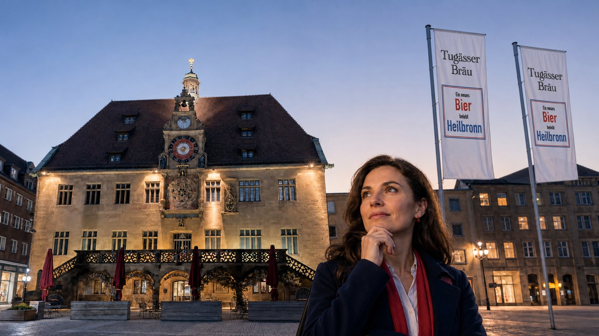
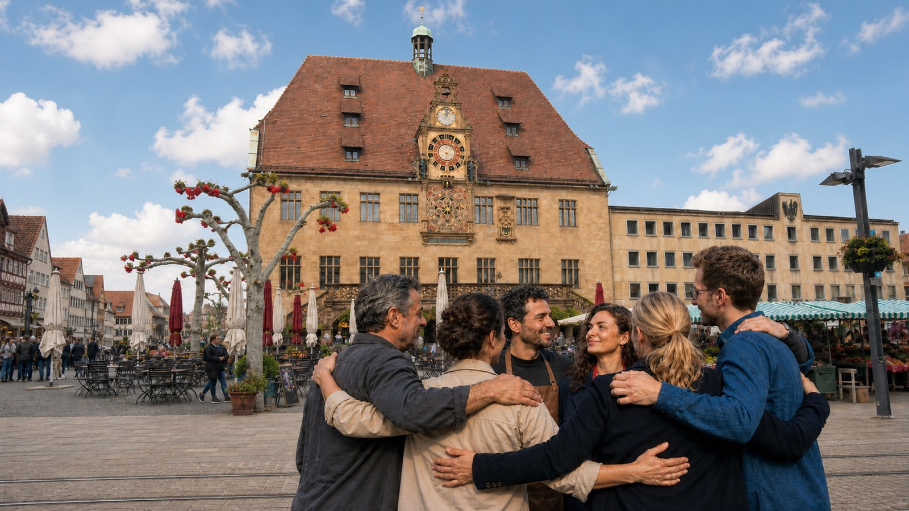

Ein Bier aus Heilbronn.
Für Heilbronn.
Ein Bier aus Heilbronn.
Für Heilbronn.
01 Traumphase
Man wird ja wohl noch träumen dürfen.
Kein Konzern, kein Chef.
Wer mitmacht, entscheidet mit. Bisher gibt es nur die Idee. Ob daraus ein Bier wird, liegt an dir.
Bleib dran

02 Bestandsaufnahme
Heilbronn hat Biergeschichte. Die Frage ist nur, wo das Heilbronner Bier heute gebraut wird.
Damals
Fünf Brauereien sind namentlich belegt, und jede hatte eine Adresse in dieser Stadt. Die Rosenau fing 1860 in der Götzenturmstraße an und zog 1898 an die Innsbrucker Straße. Ein Jahr nach ihr braute Schuchmann in Böckingen, Kirchgasse 65, im Gasthaus Zur Sonne. 1865 kam Cluss auf dem Rosenberg dazu. Die Adlerbrauerei Würzburger stand in der Deutschhofstraße 1 und hatte ihren Bierkeller in der Klarastraße. Und 1894 wurde in Biberach aus dem Gasthaus Krone die Kronenbrauerei, Bonfelder Straße 26.
1920 verkaufte Schuchmann sein Braurecht an die Rosenau. 1938 wurde die Adlerbrauerei ihren jüdischen Eigentümern genommen, der Familie Würzburger. Rosenau und Cluss taten sich 1968 zusammen und fusionierten 1973; 1976 ging in der Rosenau das Licht aus. Bei Cluss lief der Sud noch bis Ende 1995. Und als die Kronenbrauerei Ende 2016 zum letzten Mal einbraute, war Heilbronn eine Stadt ohne Brauerei.
Aus vielen wurden wenige,
aus wenigen keine.
Heute
Käthchen, Cluss, Kronenbräu — die Marken gibt es. Das Käthchen wird in Nagold-Hochdorf gebraut, Cluss in Stuttgart, Kronenbräu in Schwäbisch Hall. Das ist kein Vorwurf. Diese Brauereien halten Heilbronner Markengeschichte am Leben; ohne sie wären die Namen längst weg.
Auch bei den bekannten Heilbronner Standorten mit Brauhausbezug wird aktuell nicht vor Ort gebraut. Genau deshalb geht es uns nicht um eine weitere Kulisse, sondern um eine echte lokale Braustätte.
Heilbronner Bier gibt es.
Nur nicht aus Heilbronn.
Anderswo
Schwäbisch Hall hat 43.000 Einwohner und die Haller Löwenbräu. Eppingen hat 23.000 und die Palmbräu. Beide brauen vor Ort. Heilbronn hat 133.000 Einwohner und lässt auswärts brauen.
Muss das so bleiben?
Wir glauben nicht. Tugässer ist noch keine Brauerei — kein Bier, kein Sudhaus, kein Businessplan. Erst mal ist es eine Frage an diese Stadt: Gibt es hier genug Leute, die das ändern wollen?
Wenn du dazugehörst, findest du uns auf Instagram. Da fängt es gerade an.
03 Die Idee
Was jetzt noch fehlt, hat keiner von uns allein.
Woher
Diese Idee gehört keinem allein. Sie kommt aus einer Runde von Freunden aus der Heilbronner Gastronomie und hat gut drei Jahre vor sich hin gebrodelt.
Irgendwann und irgendwie muss man ja anfangen.
Was da ist
Mehr als das, was hier zu sehen ist, gibt es nicht: die Idee, diese Seite, ein Profil auf Instagram. Der Name ist beim Deutschen Patent- und Markenamt angemeldet, die Prüfung läuft. Das war es dann auch schon.
Kein Rezept. Kein Kessel. Kein Ort. Und keine Mannschaft, die das zusammen macht.
Wie kommen wir zusammen?

04 Mitmachen
Zwei Wege stehen offen: die Anmeldung und die Ideensammlung.
Was jetzt geht
Der erste ist die Anmeldung: Du trägst ein, was du einbringen kannst und willst — mitdenken, mitbrauen, Geräte, Räume, oder einfach probieren und hinterher ehrlich sagen, was du davon hältst. Vereine und Betriebe können sich genauso eintragen wie einzelne Leute.
Der zweite ist die offene Ideensammlung. Dort kommt alles hinein, was dir dazu einfällt: wie es am Ende aussehen soll, was dafür gebraucht wird, was wir vermeiden sollten. Aus allen Einträgen entsteht eine erste sortierte Liste der nötigen Schritte. Das Zusammenfassen übernimmt eine KI — die Arbeit danach machen wir.
Danach wissen wir mehr.
Die vielleicht naive Hoffnung dahinter: dass sich auf diesem Weg genug Heilbronner finden, die Lust darauf haben. Melden sich zu wenige, ist das auch eine Antwort.
Beides steht offen — eintragen kostet zwei Minuten, die Ideensammlung nicht mal deinen Namen. Was sonst passiert, siehst du auf Instagram.
Mach mit